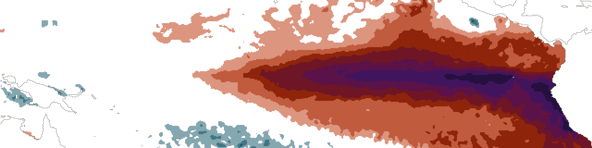
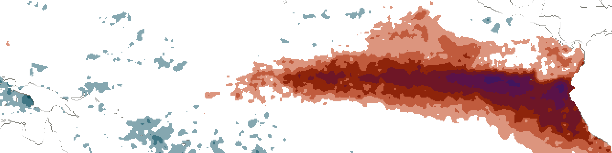
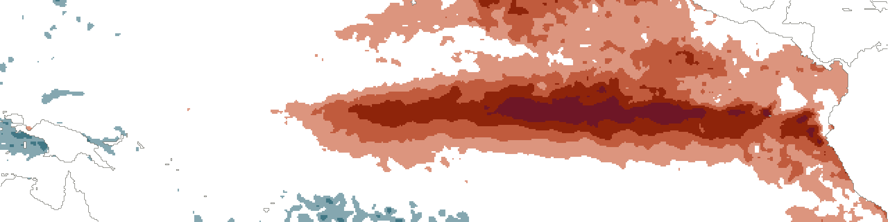
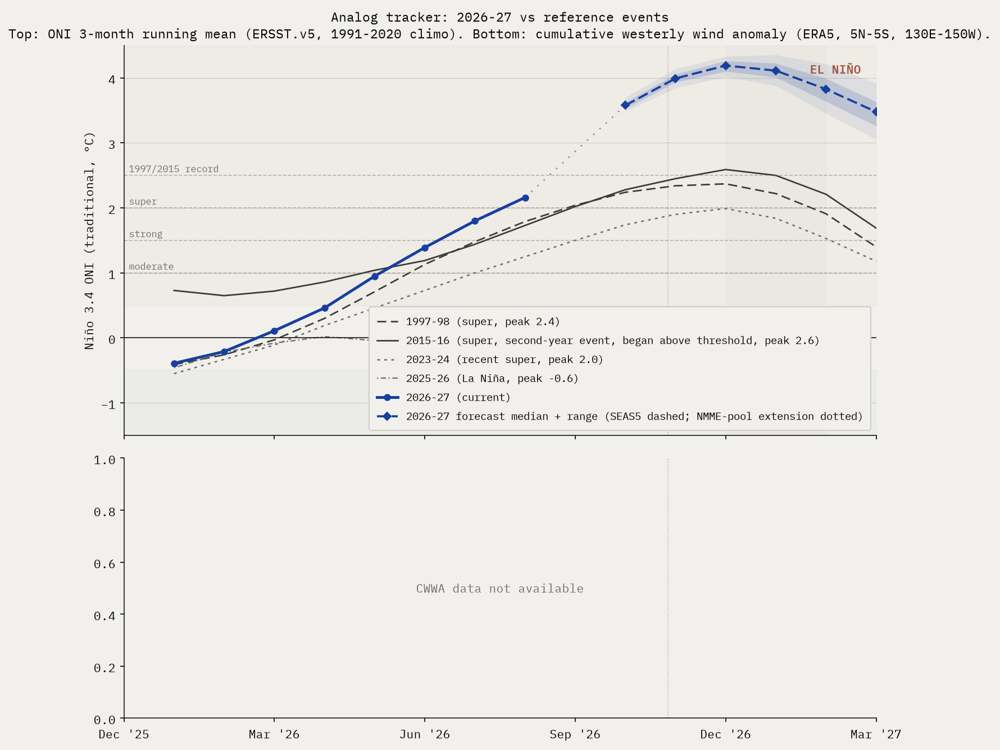

How big does this El Niño get?
The Pacific has not been this warm beneath the surface in the 47 years we have measured it. September's reading is already above what 1997 reached at its October peak, a month later in its own season.

01 · Observed

Niño 4 +1.1Niño 3.4 +3.4Niño 3 +4.3Niño 1+2 +5.2Records this week: Niño 1+2 +5.2 °C, previous record +4.5 (June 1983); Niño 3 +4.3 °C, previous record +3.3 (November 1997); Niño 3.4 +3.4 °C, previous record +3.0 (November 2015).
The same week in 1997 and 2015, and the full table, in section 04
Subsurface heat is at the highest value in the 47-year record. Above 1997's own October peak of +2.56, with roughly three months of seasonal build still ahead.
Niño 3.4 is at +3.4 °C this week, Niño 3 at +4.3 and Niño 1+2 at +5.2.
02 · Outlook
Three rungs. A rung retires when it reaches the display bound rather than when someone edits this page.
And where those numbers have come from since April, which one week cannot show. A line begins at the issue its rung was first published.
03 · Trajectory
Every event year against this one, with the forecast fan carried forward. The bands are the spread, not a second opinion.

We find climate signals in the data, and send you the ones that matter.
Confirmation email required. No spam, and every figure here stays free and public whether you subscribe or not. What you get, and how often →
04 · The full issue
This week's issue in full, as published on 2026-10-26. To cite it, use the dated copy.
Physical state
Current observations against the same super-event develop years. The rows do not all compare on the same basis, so each one states its own.
| Indicator | Current week of 2026-10-26 | 1997 | 2015 |
|---|---|---|---|
| Niño 3.4 weekly (traditional) vs same week | +3.4°C | +2.0°C | +2.3°C |
| Niño 3.4 weekly (RONI) | +2.5°C | n/a (pre-RONI) | n/a (pre-RONI) |
| Niño 3 weekly (traditional) vs same week | +4.3°C | +2.8°C | +2.4°C |
| Niño 1+2 weekly (traditional) vs same week | +5.2°C | +3.7°C | +2.0°C |
| 0–300 m heat content anomaly vs same month, 2026-09 | +3.39°C | +2.38°C | +1.80°C |
The same October week in three El Niños, west to east along the equator. This one is warmest at the South American end, where the records are.

Niño 4 +0.3Niño 3.4 +2.0Niño 3 +2.8Niño 1+2 +3.7
Niño 4 +1.1Niño 3.4 +2.3Niño 3 +2.4Niño 1+2 +2.0Records this week: Niño 1+2 +5.2 °C, previous record +4.5 (June 1983); Niño 3 +4.3 °C, previous record +3.3 (November 1997); Niño 3.4 +3.4 °C, previous record +3.0 (November 2015).
What's interesting this week
Observations from this week's data, beyond what the headline numbers say.
- Subsurface heat ahead of both Godzilla analogs. 0–300 m heat content anomaly is now +3.39°C, vs +2.38°C in 1997 and +1.80°C in 2015 at the same calendar month (September), running ahead of either super-event analog at this stage of development.
Probability ladder
Peak three-month ONI, DJF 2026-27. Each rung is computed independently; adding one does not recalculate the others.
Every published probability, every issue. A line begins at the issue its rung was first published: before that there is no consensus figure, only an anchor that sits far below, and drawing it would put a different quantity on the same line.
The "at least moderate" (+1.0°C) and "strong" (+1.5°C) thresholds reached 100% in June and have been retired from the ladder; the event has outgrown the bottom of the scale. Their full history stays in the archive. Probabilities use the consensus estimator: a CPC-derived anchor (live offset +0.90°C, week of 2026-10-21, skew-normal fit on the strength table) deflected toward an equal-weight multi-model consensus (ECMWF SEAS5 plus the NMME suite), consensus-led at weight 0.85. The rungs above +2.5°C are different in kind: no event in the instrumental record has reached them, so they carry little to no agency anchor and are driven mostly by direct model member counts. The +3.5°C rung is the furthest out: no official agency forecasts a threshold that extreme, so read it as where the hottest dynamical runs are clustering, not a calibrated probability. Adding a rung does not recalculate the others, so their week-over-week deltas stay comparable. Deltas compare to the issue four weeks prior, aligned with CPC's monthly cadence; in the brief's first month the comparison falls back to the launch issue, and weeks crossing a methodology-version change show no delta. Full estimator math on the methodology page.
Analog tracker
2026-27 trajectory vs reference El Niño events, plus a combined SEAS5 and NMME multi-model forecast carried through the winter peak.

Reading this
Only the current year carries colour. The reference years separate by line weight and dash instead, so the chart holds when it is screenshotted, reposted, or printed in grey.
2025 is in deliberately as a non-event, a La Niña year, to show what the absence of a signal looks like on the same axes.
Impact outlook
Aggregation of institutional impact ranges for the developing event. Probabilities below are from named external sources, conditional on the headline strong-to-super case in section 1 materializing.
Mediterranean
Spain, Portugal, Italy, Greece, southern France. Probability of severe summer 2026 heat and drought: high, >70% Iberia, ~65% Italy/Greece/southern France. The 2024 July Mediterranean heatwave was characterized by World Weather Attribution as "virtually impossible without human-caused climate change". A 2003-magnitude European heat event (~70,000 excess deaths) is rated medium probability (~25-30%) on a strong El Niño compounded with the multi-year Mediterranean drought baseline.
Amazon basin
Probability of major drought 2026: high (>70%); probability of fire season exceeding 2024 hotspot levels: medium-high (~50%). NASA SERVIR characterized the 2023-24 drought magnitude as "roughly double" the 2015-16 event. The 2024 fire season produced a 76% increase in hotspots vs 2023.
Australia and the Great Barrier Reef
Probability of severe bushfire season austral summer 2026-27: high (>65%); GBR mass bleaching: very high (>85%); agricultural drought: high (>70%). The reef has bleached six times since 2016; another super event makes a sixth-in-eight-years bleaching baseline. Australian winter wheat is the cleanest El Niño short on record, with declines of 16% to 46% under prior strong events (1965, 1977, 1982, 1994, 1997, 2023).
Southern Africa
Probability of major drought repeat: ~70% if rains arrive late, per OCHA framing of the 2023-24 baseline ("worst impacts in 40 years"). Probability of a humanitarian appeal exceeding $5 billion: medium-high (~50%). Six SADC countries declared emergency in 2024; back-to-back is the asymmetric humanitarian risk.
India and South Asia
IMD's April 2026 monsoon outlook is 92% of the long-period average, the first below-normal April call since 2015. Of 16 historical El Niño years since 1950, 7 produced below-normal Indian monsoons (IMD MMCFS). Pre-monsoon heat already reached 43.8°C at Akola in mid-April 2026.
United States
California atmospheric river season: above-normal Pacific storm count winter 2026-27 high (~70%), with ~50% probability of a major atmospheric river damage event January-March 2027. Pacific Northwest: warmer-drier winter (~70%) with significant 2026 fire season (~50%). Atlantic hurricane season: high probability (~70%) of below-normal activity from El Niño wind shear, partially offset by warm Atlantic SSTs (2023 produced 20 named storms despite an El Niño base state). Southern Plains drought relief: low-medium (~25-30%); the 2023-24 super event underdelivered there.
Southeast Asia
Significant drought in Indonesia: high (>70%); palm oil production decline: medium-high (~55%). The 2015-16 super event delivered a 13.2% Malaysian palm oil production decline at a 12-month lag. Vietnamese coffee output fell 20% in 2023-24.
Global coral
The 2023-25 fourth global bleaching event already affects ~84% of world reefs (International Coral Reef Initiative, April 2025). Continued mass bleaching across all tropical basins is essentially certain into 2026-27.
Source-by-source check
What each agency last said, with the age of each statement. Agencies publish on their own schedules, so these are rarely all from the same week.
- NOAA CPC strength table, NDJ 2026-27 (RONI)issued 2026-10-08 · 18 days oldsuper 96%, strong 4%, moderate 0%, weak El Niño 0%, neutral 0%, La Niña 0%.
- IRI plume, DJF 2026-27issued 2026-10-19 · 7 days oldEl Niño 100%, neutral 0%, La Niña 0%. Strength not broken out in the public Quick Look.
- BoM ENSO Outlookissued 2026-10-13 · 13 days oldEl Niño near record levels; positive IOD likely developing. Categorical only.
- ECMWF SEAS5run 2026-10-0151-member SEAS5 ensemble, peak month 2026-12: median Niño 3.4 anomaly +4.19 deg C (single month); 51/51 members above +1.5 (~100% above +2.0, ~100% above +2.5). Last lead 2027-03: median +3.48 deg C.
Caveats this issue
- The CPC anchor for the +2.5°C bucket carries a 94–100% range. It comes from a bootstrap that perturbs CPC's published bin probabilities by Gaussian noise (sigma 1 percentage point, matching CPC's whole-percent reporting precision) and refits the skew-normal each time. The range reflects reporting-quantization uncertainty in CPC's table, not underlying forecast uncertainty. The smoothed headline (99%) sits above this anchor range because the bounded SEAS5 deflection (+0.0pp this issue) lifts it.
- ECMWF SEAS5 vs CPC anchor on the upper tail above +2.5°C trad ONI: SEAS5 has 51/51 members (100%) at 2027-03 (max available lead); the CPC anchor lands at 94–100%. The v1.5 smoothing absorbs 20% of this gap (capped at ±10pp/week), moving the smoothed headline to 99%. We subtract SEAS5's own model climatology, which removes its known ENSO warm bias; an observational-climatology subtraction would put SEAS5 higher still. For broader context, multi-model pools (e.g., the Climate Brink dashboard's 13-model 637-member view) currently report a meaningfully higher probability for the same threshold; the gap reflects CPC's analyst-correction vs raw multi-model breadth, documented as methodology limitation #7.
- Forecast skill note: mid-year forecasts for the DJF peak are past the boreal-spring predictability barrier and carry materially narrower error bars than the April–May issuances did. The remaining uncertainty is concentrated in peak magnitude at the top of the distribution (the +3.0 and +3.5 rungs), not in whether a strong-to-super event occurs.
05 · Provenance
What each source said, when it said it, and every caveat that governs a figure above. One register rather than three.
By Kristjan Lepik. Licensed CC BY-NC 4.0.
Cite as: Lepik, K. (2026). The Long Swell: El Niño 2026-27. thelongswell.com.
Free to share and quote with attribution; commercial reuse requires permission. Every issue archived, immutable. Disagreements are surfaced, not averaged.